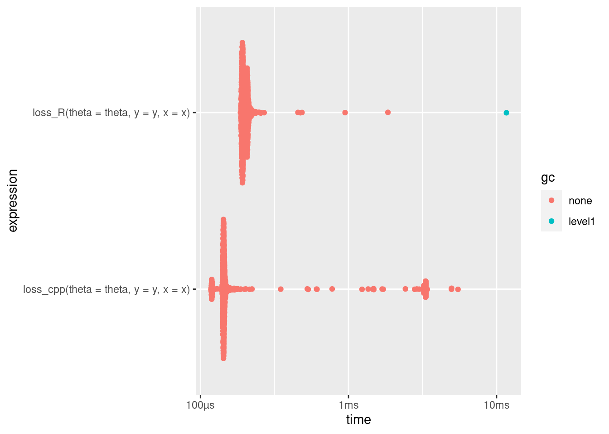

library(Rcpp)
library(RcppArmadillo)
library(torch)
library(tictoc)
library(bench) # comparaison des vitesses
library(ggplot2)
library(ggbeeswarm)Torch & Rcpp
Torch on R
La librairie {torch} de R permet la manipulation de tenseur en R. Elle permet notamment de faire la différenciation automatique, c-a-d d’évaluer numériquement le gradient d’une fonction et d’effectuer des descentes de gradient.
Rcpp
L’utilisation de {Rcpp} permet d’exporter des fonctions C++ en R. Les fonctions seront alors directement utilisables dans un script et avec des arguments R. Ainsi on peut tirer partie de la compilation d’un code C++, et accélérer de nombreux calculs algébriques.
Pour le calcul algébrique il est utile d’intégrer le package {RcppArmadillo} qui donne accès à la librairie {Armadillo} de C++ lorsque l’on appel une fonction {Rcpp} dans R.
Example
Dans cet exemple nous allons calculer la perte d’une fonction logistique en R et en C++. Puis comparer les résultats avec le package {bench} de R.
Coder la fonction en C++
// [[Rcpp::depends(RcppArmadillo)]]
#include <RcppArmadillo.h>
// Logistic loss
// [[Rcpp::export]]
// const : pas de changement de valeur dans la fonction
// arma:: : se sont les classes de Armadillo
// using namespace arma to erase all arma::
// & : appel sans copie donc plus rapide
double loss_cpp( const arma::vec theta, const arma::vec& y, const arma::mat& x ) {
arma::vec odds(x.n_rows);
odds = x * theta;
double log_lik;
log_lik = arma::dot(y, odds) - arma::sum(arma::log(1 + arma::exp(odds)));
return(-log_lik);
}Appel et compilation du script depuis R avec la fonction sourceCpp() de {Rcpp}
sourceCpp(file = "logisticloss.cpp")Fonction loss en R
loss_R <- function(theta, y, x) {
odds <- x %*% theta
log_lik <- sum(y * odds - log(1 + exp(odds)))
return(-as.numeric(log_lik))
}Résultats
On remarque que les résultats sont identiques pour la fonction {Rcpp} et la fonction en R.
theta = c(0.5, 0.1)
y = 1.0
x = matrix(c(0.1, 0.2), 1, 2)loss_cpp(theta, y, x)[1] 0.6587596loss_R(theta, y, x)[1] 0.6587596Dans l’optique de comparer les performances de ces deux fonctions on utilise la fonction mark() du package {bench}.
n_covar <- 300
size <- 1000
theta <- rnorm(n_covar)
y <- as.numeric(rbinom(size, 1, 0.3))
x <- matrix(rnorm(size * n_covar), size, n_covar)comp_tbl <- bench::mark(
loss_R(theta = theta, y = y, x = x),
loss_cpp(theta = theta, y = y, x = x),
iterations = 1000
)
autoplot(comp_tbl)Loading required namespace: tidyr
Comme on peut le voir sur le graphique plus haut la fonction loss_cpp() est environ 2 fois plus efficace que la fonction loss_R().
Attention aux librairies BLAS et LAPACK
La librairie BLAS de OpenBlas présentée lors de cette même session ne fonctionne pas correctement avec {Rcpp}. On observe une baisse de fonctionnement très quantitative (facteur 100). La librairie BLAS de Intel MKL reste quant à elle plus efficace.